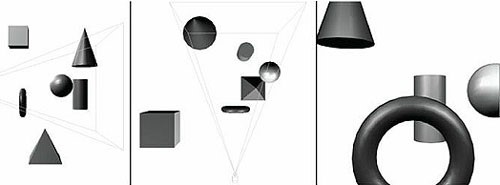
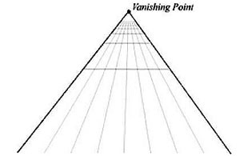
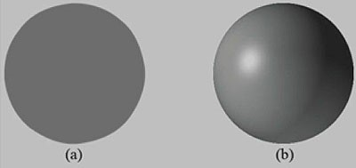
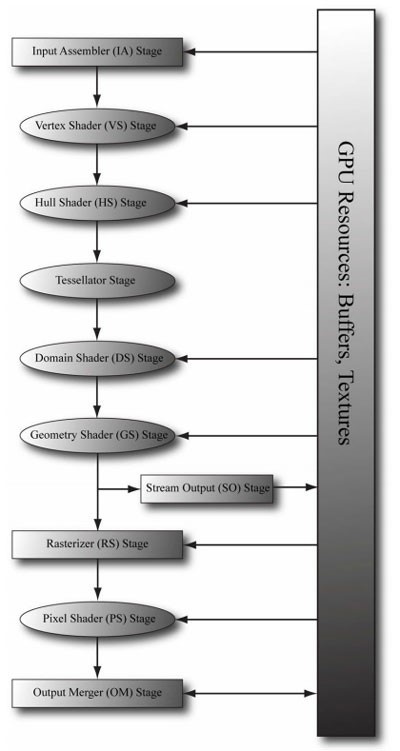
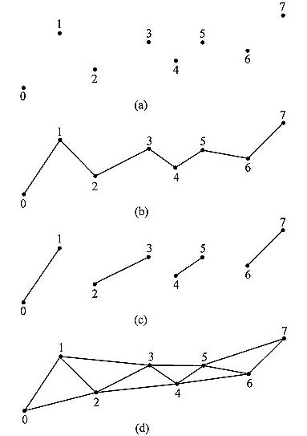
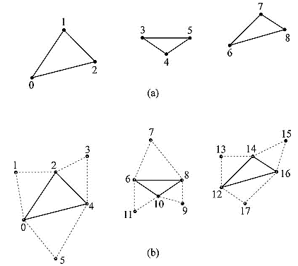
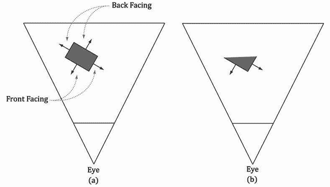
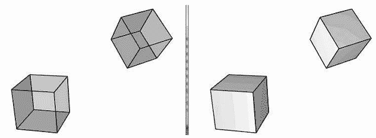

DirectX11龙书-第五章:渲染管线
三维视觉
- 渲染管线:在给定一个3D场景的几何描述及一架已确定位置和方向的虚拟摄像机时，根据虚拟摄像机的视角生成2D图像的一系列步骤
渲染管线由许多步骤组成，每个步骤称为一个阶段

- 线性透视（linear perspective）:在2d画布上两条平行的线不断向远处延伸，最终会相交到一点。这个点是零点（vanishing point）
 - 景深现象（depth phenomenon）:物体的大小会随着深度的增加而减小
- 物体重叠（object overlap）:一个不透明的物体会挡住它后面的其他物体的一部分（或全部）

- 光照（lighting）和阴影（shading）:表现物体立体感和体积感
阴影具有两个关键作用：一是告诉我们场景中的光源位置，二是告诉我们飞船距离地面的高度。
模型的表现形式
- 三角形是构成物体模型的基本单位
基本计算机颜色
颜色运算
0.5(1, 1,1) = (0.5, 0.5, 0.5)
将白色乘以0.5，得到一个中等强度的灰色
分量乘法（componentwise multiplication）。
$(c_{r},c_{g},c_{b}) ⨂ (k_{r},k_{g},k_{b}) = (c_{r}k_{r},c_{g}k_{g},c_{b}k_{b})$
(r,g,b)⨂(0.5,0.75,0.25) = (0.5r,0.75g,0.25b)
常用于光照方程,比如上述式子可以表示：光线照射物体时，反射50%红光，75%绿光，25%蓝光
128位颜色
alpha值：用于表示物体的不透明度
alpha == 0 完全透明；alpha == 1 完全不透明
r,g,b,a各用32位浮点型，所以这种表达方式共128位
32位颜色
r,g,b,a分别用8位表示，每个分量又256种强度。
32位于128位互相转换
32->128: 各分量除以256，转换为float
128->32: 各分量乘以256, 转换为int通常，许多颜色运算（例如，在像素着色器中）使用的都是128位颜色值；通过这一方式，我们可以有足够多的二进制位来保证计算的精确度，减少算术错误的累积。不过，最终的像素颜色通常是存储在后台缓冲区的32位颜色值中；目前的物理显示设备还不能充分利用更高的分辨率颜色。
渲染管线概述

内存到阶段的箭头表示阶段从内存种读数据
内存到阶段的箭头表示阶段在内存种写数据
输入装配阶段(Input Assembler Stage)
输入装配（Input Assembler，简称IA）阶段从内存读取几何数据（顶点和索引）并将这些数据组合为几何图元（例如，三角形、直线）。
索引规定了顶点的组织形式，解释了该以何种方式组成图元。
顶点
- Direct3D中的顶点由空间位置和各种附加属性组成。比如添加法线向量实现光照，添加纹理坐标实现纹理等等
图元拓扑
- 顶点缓冲区:在连续内存中存储了的一个顶点列表
- 图元拓扑:用来指定如何组织顶点缓冲区的顶点。例如每两个组成一条直线，每三个组成一个三角形
基本图元

(a)为点列表 D3D11_PRIMITIVE_TOPOLOGY_POINTLIST
(b)为线带 D3D11_PRIMITIVE_TOPOLOGY_LINESTRIP
(c)为线列表 D3D11_PRIMITIVE_TOPOLOGY_LINELIST
(d)为三角形带 D3D11_PRIMITIVE_TOPOLOGY_TRIANGLESTRIP 三角形带不会造成顶点的重复存储

(a)为三角形列表 D3D11_PRIMITIVE_TOPOLOGY_TRIANGLELIST
带邻接信息的图元
- 如上图(b)主要用于某些几何着色器的的算法 D3D11_PRIMITIVE_TOPOLOGY_TRIANGLELIST_ADJ
邻接图元顶点只能作为几何着色器的输入数据且不会被绘制出来
控制点面片列表
- 见13章 D3D11_PRIMITIVE_TOPOLOGY_N_CONTRIL_POINT_PATCHLIST
用于图形渲染管线的细分阶段
索引
问题：通过三角形构造其他图形的时候，如果使用三角形列表，将会造成大量的顶点的重复。
产生影响: 1.增加内存需求量。2.增加图形硬件的处理负担。
方法一：使用三角形带。但是顶点必须按照带状组织，不灵活。
方法二：引入索引。
//create a quad Vertex v[4] = {v0, v1, v2, v3}; UINT indexList[6] = {0, 1, 2, //Triangle0 0, 2, 3}; // Triangle 1 };当顶点列表中的唯一顶点得到处理之后，显卡可以使用索引列表把顶点放在一起构成三角形。我们将“复制问题”转嫁给了索引列表，但是这种复制是可以让人接受的。因为：
1．索引是简单的整数，不像顶点结构体那样占用很多内存（顶点结构体包含的分量越多，占用的内存就越多）。
2．通过适当的顶点缓存排序，图形硬件不必重复处理顶点（在绝大多数的情况下）。
顶点着色器阶段(vertex shader Stage)
顶点着色器将IA阶段的输出的顶点实现相关效果再输出（例如变换，光照，置换贴图映射等）。此外此阶段还可以访问内存种的纹理和其他数据（变换矩阵和场景灯光）。可以概念性地认为在硬件上执行了如下代码：
for(UINT i = 0; i < numVertices; ++i)
outputVertex[i] = VertexShader(inputVertex[i]);
局部空间和世界空间
- 世界变换:局部空间->世界空间
观察空间
- 观察变换:世界空间->观察空间
齐次裁剪控件
https://gameinstitute.qq.com/community/detail/117556
规范化设备坐标(NDC)
- 将坐标都映射到[-1,1]，目的是消除设备差异性
曲面细分阶段
- 可选阶段,详见13章
几何着色器阶段
- 接收完整的图元数据
- 用于创建和销毁几何体
根据接收到的图元数据来扩展图元或根据某些条件来拒绝输出某些图元数据
常用于将一个点扩展为一个四边形，或者将一条线扩展为一个四边形 - 顶点位置在离开几何着色器之前，必须被变换到齐次裁剪空间。
裁剪阶段
- 完全位于这块空间内部的图元将会被保留，完全位于这块空间外部的图元将会被剔除，而与这块空间边界相交的图元就会被裁剪。
- 三角形被裁剪后会变成四边形，这需要重新划分三角形
- Sutherland-Hodgeman裁剪法:
光栅化阶段
视口变换
- 齐次裁剪空间->规范化设备空间->后台缓冲区的视口区域（此时x,y以像素为单位）
- z值还要被深度缓存使用。
背面消隐
判断三角形正反面
- 设三角形的定点排列为$v_{0},v_{1},v_{2}$
- 可以计算出三角形的法线，方法如下:
$\vec{e_{0}} = v_{1} - v_{0}$
$\vec{e_{1}} = v_{2} - v_{1}$
$\vec{n} = \frac{\vec{e_{0}} × \vec{e_{1}}}{|| \vec{e_{0}} × \vec{e_{1}} ||}$ - 带有法线向量的面为正面，而另一个面为背面
当观察者看到三角形的正面时，我们说三角形是朝前的；当观察者看到三角形的背面时， 我们说三角形是朝后的。
因为按照我们选择的约定（即，我们计算三角形法线的方式），按顺时针方向环绕的三角形（相对于观察者）是朝前的，而按逆时针方向环绕的三角形（相对于观察者）是朝后的。 - D3D 顺时针
背面消隐(backface culling)
- 背面消隐（backface culling）是指让管线放弃对朝后的三角形的处理。这可以将所要处理的三角形的数量降低到原数量的一半。
- 以下为2D和3D场景消隐前后的表现


顶点属性插值
- 一条3D线被投影到投影窗口上（在屏幕空间中投影是一条2D线）。我们看到，在3D线上取等距离的点，在2D屏幕空间上的投影点却不是等距离的。所以，我们在3D空间中执行线性插值，在屏幕空间需要执行非线性插值。
像素着色器阶段
- 像素着色器（Pixel shader）是由我们编写的在GPU上执行的程序。像素着色器会处理每个像素片段（pixel fragment），它的输入是插值后的顶点属性，由此计算出一个颜色。像素着色器可以非常简单地输出一个颜色，也可以很复杂，例如实现逐像素光照、反射和阴影等效果。
输出合并阶段
- 当像素片段由像素着色器生成之后，它们会被传送到渲染管线的输出合并（output
merger，简称OM）阶段。在该阶段中，某些像素片段会被丢弃（例如，未能通过深度测试或模板测试）。未丢弃的像素片段会被写入后台缓冲区。混合（blending）工作是在该阶段中完成的，一个像素可以与后台缓冲区中的当前像素进行混合，并以混合后的值作为该像素的最终颜色。某些特殊效果，比如透明度，就是通过混合来实现的；我们会在第9章专门讲解混合。
文章标题:DirectX11龙书-第五章:渲染管线
本文作者:Sanctorum003
发布时间:2019-08-19, 10:56:43
最后更新:2019-09-14, 15:09:14
原始链接:https://sanctorum.github.io/2019/08/19/渲染管线/版权声明: "署名-非商用-相同方式共享 4.0" 转载请保留原文链接及作者。